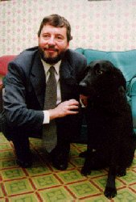
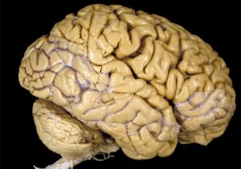
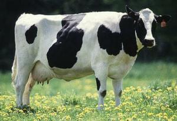

Tuesday, October the 13th, 2009
back to: title, date or indexes
Listening to the Today programme on Radio 4 this morning, I learned the thrilling news that David Blunkett is donating his brain to science. I have taken immediate steps to ensure that here at Hooting Yard we do not miss the chance to get our hands on this fantastic objet de Blunkett. So I am launching a special fundraising drive, dubbed Let's Buy Blunkett's Brain! Please use the donate button to give generously.

David Blunkett (brain still inside head)
To demonstrate our serious commitment to this project, I have already obtained a jar in which to keep the brain, and will be rummaging around in the pantry for chemicals and liquid pickling fluids in which to preserve it.

Blunkett's brain as it will look when extracted from his head
Obviously there will be all sorts of exciting experiments to be done once we have the Blunkett brain snugly ensconced in the jar. I think priority should be given to one which attempts to discover why that cow attacked the heroic MP. In a designated field, the very same cow, or one similar, will be tethered to a post, and the jar containing Blunkett's brain will be brandished in its face in a threatening manner. Will the cow be frightened in its turn, or will it strain at its rope and try to attack the jar? Or could there be another outcome entirely, such as the cow displaying no interest in the jar whatsoever and falling into cow sleep?

A cow
We will only find out if we do all in our power to get hold of that brain as soon as possible! Join the campaign today, and give as much cash as you can!
Hooting Yard on the Air, December the 17th, 2009 : “That Awful Mess At Sludge Hall Farm” (starts around 10:19)